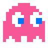
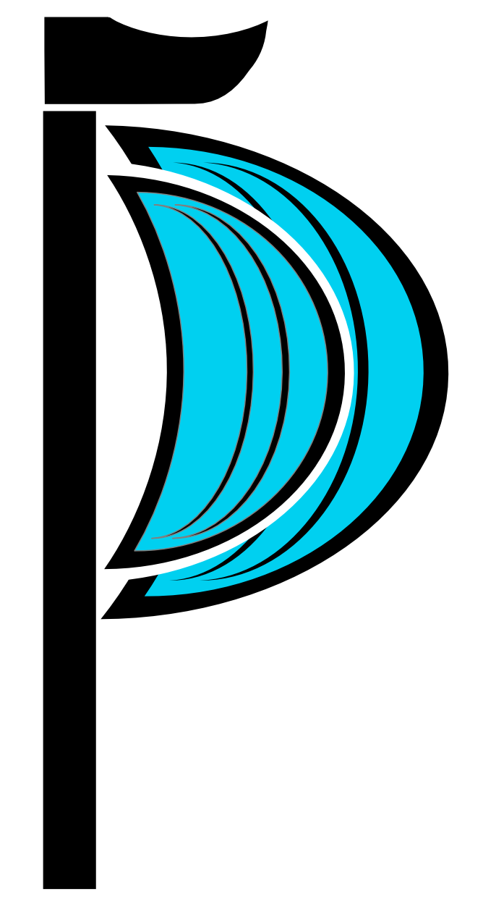

Niklas stinkt gewaltig
gegfgiuseefuhefhakfhaekfhkehkfhekfheufhuehfehfeuoehfoheaofaheifheoifhepihfoheofheaofhoeahfoaehfoeahfoeahofheaofhaeofheoifheaoifheaoifhaehfoaehfoiehfoeahoifhfhoifhoieahofiheaofheaofheaohfoihfoihfoeihfoeahfe